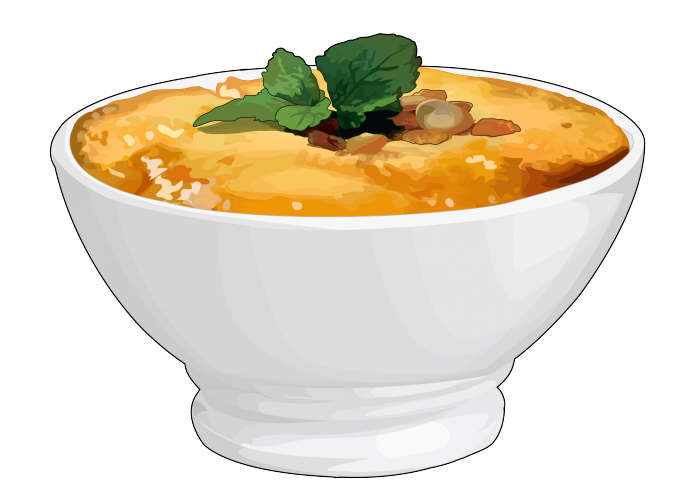

Frangollo

Frangollo by Proyecto TSP de la Consejería de Educación y Universidades del Gobierno de Canarias. CC by-nc-sa
Description
Frangollo is a traditional dessert from the Canary Islads. Usually served along with dry fruits and palm honey
Ingredients
- 250g Mais whole weat
- 1l milk
- 60g kg Raisins
- 1 cinnamon stick
- 1 lemon peel
- 30g butter
- 5 spoons of sugar
- 2 yolks
- 60g peeled, toasted and chopped almonds
Steps
- Hidrate the raisins
- Boild the milk with the cinnamon and the lemon peel
- Put the weat in
- Move until it gets creamy
- put off the cinnamon and the lemon peel
- Add raisins
- Put on bowls
- Fridge until they cool
- Serve with a bunch of mill or some palm honey